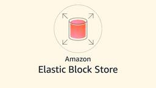

AWS Storage Blog
フィード
How Turso built a transactional database using Amazon S3 Express One Zone
AWS Storage Blog
Turso is a transactional, cloud database platform built on SQLite, serving developers and enterprises that need lightweight, high-density databases at the edge and in the cloud. Because each database is just a file, a single Turso compute node can host millions of them with no cold start. Turso delivers these databases in a Bring Your […]
19時間前
Unlocking data residency use cases with Amazon S3 in AWS Local Zones
AWS Storage Blog
Organizations running workloads in metros and geographies far from major cloud infrastructure need scalable, fully managed object storage, but regulations or business requirements mandate that data stays within specific national or metropolitan boundaries. This is particularly true for financial services, healthcare, and public sector, where compliance frameworks not only dictate where primary data resides but […]
4日前

Optimize Amazon EBS volumes to get the right performance at the right time
AWS Storage Blog
Business-critical applications depend on reliable storage performance. However, workloads aren’t static and can vary by time of day, day of week, or business cycle. Matching storage performance to these shifting demands is essential for maintaining application reliability without overspending. Under-provisioning can affect your applications when demand peaks, while provisioning too much for too long means […]
4日前

Manage storage consumption at scale using quotas on Amazon FSx for NetApp ONTAP
AWS Storage Blog
Learn how to configure ONTAP tree quotas on Amazon FSx for NetApp ONTAP to enforce per-workload capacity boundaries within a shared volume. This post walks through creating qtrees, defining quota policy rules with hard limits, soft limits, and thresholds, activating enforcement, and monitoring consumption using native quota reports and EMS events.
9日前
How Vanderbilt University scales digital archive discovery with Amazon S3 Metadata
AWS Storage Blog
Managing massive digital collections is hard. When you’re preserving decades of historical content and adding new materials daily, making that content discoverable matters more than the storage itself. Vanderbilt University Library discovered this firsthand while managing their extensive digital archives, including the renowned Vanderbilt Television News Archive (VTNA). Amazon S3 Metadata accelerates data discovery by […]
10日前
Zero-downtime Amazon S3 Versioning: Architectural patterns for mission-critical workloads
AWS Storage Blog
Organizations delivering content on a global scale rely on distributed edge networks to cache and serve billions of requests daily. These architectures depend on highly aggressive Time-To-Live (TTL) configurations to maximize performance and minimize origin load. On a cache miss, the network falls through to the origin to retrieve the requested content. At this scale, […]
23日前
Replicate Amazon S3 bucket configurations across AWS Regions with AWS Step Functions
AWS Storage Blog
Many organizations operate thousands of Amazon S3 buckets in a single AWS Region, each with its own configuration accumulated over the years. Some were created manually in the AWS Management Console and others by scripts that are no longer actively maintained, provisioned by different business units with their own policies, lifecycle rules, encryption, and tags. […]
24日前
Integrating Amazon FSx for NetApp ONTAP and Amazon FSx for Windows File Server using Microsoft Entra Domain Services
AWS Storage Blog
Organizations are increasingly adopting cloud-based identity solutions to reduce infrastructure overhead and improve their security posture. For customers running file workloads on AWS, both Amazon FSx for NetApp ONTAP and Amazon FSx for Windows File Server require joining a Microsoft Active Directory domain to serve SMB file shares and support Windows-based authentication. When customers have […]
24日前
Query Amazon S3 access logs instantly with CloudWatch and S3 Tables
AWS Storage Blog
Knowing who accessed your data, when, and how is the foundation for security investigations, compliance audits, cost attribution, and performance troubleshooting. Detailed access logs capture every request: who made it, which resource was accessed, and what response was returned. In practice, though, they arrive as semi-structured records spread across different locations. Turning them into actionable […]
25日前
Simplify workforce data access with AWS Transfer Family web apps and Terraform
AWS Storage Blog
Enterprises increasingly need direct access to data stored in Amazon Simple Storage Service (Amazon S3) for analytics, reporting, collaboration, and decision-making. Enabling this access for non-technical users can be challenging: training staff on the AWS Management Console, building custom portals, or adopting third-party tools each carry trade-offs in cost, complexity, or security posture. And as […]
25日前
Gain workload-specific storage insights with Amazon S3 Storage Lens groups
AWS Storage Blog
As industries generate and store growing volumes of data, gaining meaningful insights into storage usage becomes increasingly complex. You need to understand your data growth patterns and drivers while optimizing storage investments across different business units and workloads. However, obtaining the necessary visibility by data categories, departments, or applications remains operationally difficult, limiting the ability […]
1ヶ月前
Achieving sub-10ms latency and 94% cost savings with Diskless Kafka using AutoMQ and Amazon FSx for NetApp ONTAP
AWS Storage Blog
As more organizations adopt Diskless Kafka—a cloud-based messaging queue that builds entirely on object storage like Amazon Simple Storage Service (Amazon S3)—they gain significant cost and operational advantages. But for latency-sensitive workloads, this architecture faces a key question: how to keep millisecond-level write latency while preserving the cost benefits of S3? This is the core […]
1ヶ月前
Secure shared storage with CIFS share-level access controls on Amazon FSx for NetApp ONTAP
AWS Storage Blog
Learn how to use CIFS share-level access controls with qtrees on Amazon FSx for NetApp ONTAP to enforce per-team access boundaries within a shared volume, preventing unauthorized share access and simplifying access management through Active Directory group membership.
1ヶ月前
Building persistent memory for multi-agent AI systems with Amazon S3 Vectors
AWS Storage Blog
The most capable multi-agent AI systems share a common trait: they give agents the right context at the right time. When agents lack access to shared history, including what other agents discovered, what tasks are already complete, and what decisions were made in previous sessions, they might duplicate work, contradict each other, and burn through […]
2ヶ月前
Orchestrate automated response for Amazon GuardDuty Malware Protection for AWS Backup at scale
AWS Storage Blog
Many organizations maintain a backup strategy built on the assumption that the backups themselves are clean. Ransomware can sit dormant in your environment for weeks, spreading across production systems while nightly backup jobs preserve it alongside your data. By the time the threat is identified, those backups are no longer recovery points; they are artifacts […]
2ヶ月前
Automate Amazon EBS gp2 to gp3 migration at scale with AWS Step Functions and AWS Lambda
AWS Storage Blog
Organizations managing thousands of Amazon Elastic Block Store (Amazon EBS) volumes across multiple AWS Regions have a significant cost optimization opportunity: migrating from gp2 to gp3 can deliver up to 20% savings, as highlighted by AWS Cost Optimization Hub. With AWS providing the ModifyVolume API for in-place, zero-downtime conversions, the path to savings is clear. […]
2ヶ月前
Amazon S3 audit logging, Part 3: Analyzing S3 Metadata journal tables for object lifecycle tracking
AWS Storage Blog
This is Part 3 of our three-part series on Amazon S3 audit logging. In Part 1, we covered server access logs for HTTP-level requests and performance analysis. In Part 2, we covered S3 data events in AWS CloudTrail for identity-focused security investigations. As data volumes grow and storage costs become a significant line item, organizations […]
2ヶ月前
Amazon S3 audit logging, Part 2: Centralized logging and analysis of S3 data events in AWS CloudTrail for security and compliance
AWS Storage Blog
This is Part 2 of our three-part series on Amazon S3 audit logging, focusing on identity-driven security investigations. In Part 1, we covered S3 server access logs for HTTP-level performance analysis and cost attribution. When a security incident occurs—an unauthorized download, a bulk deletion, or suspicious access from an unfamiliar location—the first question is always, […]
2ヶ月前
Amazon S3 audit logging, Part 1: Analyzing server access logs with Amazon Athena for performance insights
AWS Storage Blog
Organizations storing sensitive data must maintain complete visibility into how it’s accessed, by whom, and what changes occur over time. Regulatory frameworks demand detailed audit trails, security teams need rapid answers during investigations, and finance teams require granular cost attribution. Yet as data grows from terabytes to petabytes, the scale that makes centralized storage attractive […]
2ヶ月前
How to configure user storage quotas for the AWS Transfer Family on Amazon FSx for NetApp ONTAP
AWS Storage Blog
Managing storage efficiently in a multi-user environment is a critical yet often overlooked aspect of cloud infrastructure design. When you combine AWS Transfer Family with Amazon FSx for NetApp ONTAP, you unlock a robust, enterprise-grade file transfer solution. However, without effective quota controls, a single user or process can consume disproportionate storage, leading to performance […]
2ヶ月前